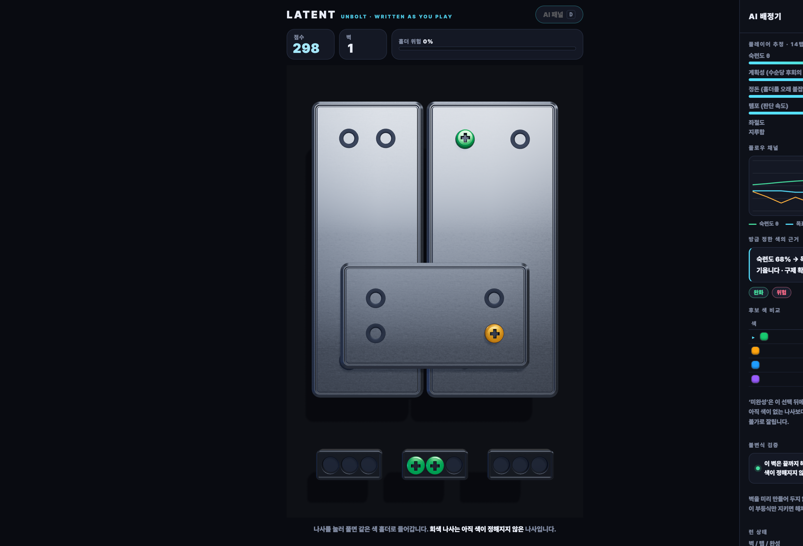

NHN GAME × AI 해커톤 · NAN 2026 · 사전과제 제출물 ④
LATENT — 레벨을 미리 만들지 않는 퍼즐
캐주얼 퍼즐의 원가는 레벨 뱅크이고, 그 원가에서 비싼 쪽은 만드는 일이 아니라 만든 레벨이 풀리는지 검증하는 일입니다. 레벨을 미리 만들지 않으면 그 검증 단계가 통째로 사라집니다.
LATENT의 나사는 판에 덮여 있는 동안 색이 없습니다. 관측되지 않았으니 아직 존재할 이유가 없습니다. 위의 판이 떨어져 손이 닿는 순간, AI가 플레이어의 그 시점 상황을 읽고 색을 씁니다 — 그때 “이 벽은 끝까지 해체 가능한가”를 부등식 하나로 보장하면서. 사후 검증이 필요 없습니다. 애초에 불가능한 상태를 만들지 않기 때문입니다.
소코반 레벨 자동 생성은 논문 주제입니다. MCTS로 생성하고, 난이도는 “문제 분해 지표”나 “사람의 탐색을 흉내낸 계산 모델”로 추정합니다. 이유는 단순합니다 — 소코반은 PSPACE-complete라 만든 레벨이 풀리는지, 얼마나 어려운지를 싸게 알 방법이 없습니다. 그래서 사람이 검수해야 하고, 그게 원가입니다.
그러므로 장르 선택의 기준은 “재미있을까”가 아니라 “난이도와 풀림을 근사가 아니라 정확히, 싸게 알 수 있는가”가 됩니다. 이 축으로 후보 셋을 직접 구현해 재고 골랐습니다.
| 후보 | 검증 처리량 | 정확성 |
|---|---|---|
| A · STAMP GF(2) 토글 퍼즐 |
85,228 레벨/초 |
완전 정확. 가우스 소거 한 번으로 풀림 여부·최소 수·해의 개수(2^영공간차원)가 전부 나옵니다. 유일해 레벨은 풀리는 것의 37%. |
| B · MAGNET 당겨 붙이는 퍼즐 |
26 레벨/초 |
불완전. 레벨당 탐색 노드 28,988개. 깊이 6에서 6.7%만 풀리고, 나머지는 “안 풀린다”가 아니라 모른다입니다. |
| C · 지연 결정 (채택) |
470,000 결정/초 |
검증 단계가 없음. 배정 시점의 부등식으로 클리어 가능성이 구성상 보장됩니다. |
B가 A보다 3,300배 느립니다. 이것이 이 프로젝트가 하려는 이야기의
축소판입니다. 소스는 src/probe/에 그대로 있고
npx tsx src/probe/a-stamp.ts 등으로 재현됩니다.
A는 “난이도를 정확히 계산한다”는 주장이 가장 강했지만 C를 골랐습니다. 이유는 검증 비용을 0으로 만드는 쪽이 더 근본적이기 때문이고, 시장에서 검증된 장르 위에서 그렇게 할 수 있기 때문입니다.
| 모듈 | 역할 |
|---|---|
core/plates.ts | 벽 기하, 덮임 관계, 홀더 규칙 |
core/rng.ts | 시드 기반 PRNG — 시드만 있으면 런 전체가 재현됩니다 |
ai/solver.ts | 국면 평가와 수순 순위. 보드를 복제하지 않고 해석적으로 계산합니다 |
ai/skill.ts | 수순당 후회 → 숙련도 추정, 감정 상태 분리 |
ai/assigner.ts | 색 결정 + 완결성 검사 + 생존 바닥선 |
ai/policy.ts | 정책 상수. 빌드에 구워짐 |
ai/bots.ts | 봇 페르소나 — 콜드스타트 문제의 해법 |
ui/scene.ts | Three.js 씬. 규칙과 시야를 일치시키는 책임 |
ui/assets.ts | glTF 로드, 방향 정규화, 판 나인슬라이스 |
assets/blender/*.py | 철판·나사·볼트구멍·홀더를 만드는 Blender 스크립트 |
tools/bench.ts | 단언하는 벤치. 보고하지 않고 실패시킵니다 |
tools/margin.ts | 이 규칙에서 실력이 얼마나 값어치가 있는지 측정 |
probe/ | 2.1의 후보 비교를 재현하는 실측 코드 |
“레벨을 클리어했는가”, “몇 분 걸렸는가”는 몇 분에 한 번 도착하고 그 레벨이 마침 쉬웠는지에 오염됩니다. 대신 모든 탭을, 그 탭이 이루어진 바로 그 국면에서 채점합니다.
regret = (최선수의 가치 − 플레이어가 고른 수의 가치)
────────────────────────────────────────
그 국면에서의 선택지 가치 편차
국면이 통제되어 있으므로 “쉬워서 잘한 것”과 “실제로 잘 둔 것”이 섞이지 않습니다.
선택지가 전부 동등한 국면은 정보량 0으로 처리해 추정을 흔들지 않고,
표본이 쌓일 때까지는 samples / (samples + 10) 비율로 사전확률에서
벗어납니다 — 첫 판부터 최대 압박이 걸리지 않도록.
배정기는 “지금 이 순간이 어떻게 느껴져야 하는가”만 정합니다. 실제로 색을 쓰기 전에 완결성 부등식이 별도로 검사합니다. 플레이어를 평가하는 쪽은 틀려도 되지만, 나사에 색을 쓰는 쪽은 틀리면 안 되기 때문입니다. 추정이 어긋나면 난이도가 조금 안 맞을 뿐이지만, 배정이 잘못되면 그 벽은 영원히 해체할 수 없습니다.
불변식 — 이 벽은 끝까지 해체 가능하다.
모든 색은 최종적으로 3의 배수가 되어야 합니다. 그러지 못하면 남은 나사는 영원히
홀더를 비우지 못합니다. 그래서 매 배정마다
색 미결정 나사 수 ≥ 열려 있는 색을 닫는 데 필요한 나사 수를 검사하고,
이를 깨는 후보는 기각합니다.
여기에 생존 바닥선이 하나 더 있습니다 — 색을 쓰는 그 순간에는 둘 수 있는 수가 최소 하나 존재해야 합니다. 이보다 강한 약속은 하지 않습니다. “해체 가능한 벽”과 “이 플레이어가 해체할 벽”은 다른 말이고, 후자를 약속하는 순간 게임이 사라지기 때문입니다.
그리고 색 폭 상한 — 손이 닿는 나사가 몇 개 안 될 때는 그 안의 서로 다른 색이 홀더 수를 넘지 않아야 합니다. 배포된 빌드를 실제로 플레이하다 3탭 만에 패배했고, 원인은 맨 위 판의 나사 네 개가 전부 다른 색이었던 것입니다. 홀더 셋 중 어느 셋을 잡아도 네 번째는 갈 곳이 없고, 그 판은 영원히 떨어지지 않습니다. 어려운 자리가 아니라 불가능한 자리였습니다.
두 제약은 동등하지 않습니다. 처음엔 하나의 필터에 함께 넣었더니, 둘 다 만족하는 후보가 없는 턴에서 폴백이 완결성 쪽을 어겼습니다 — 벤치 한 번에 301회. 완결성이 약속이고 색 폭 상한은 그 아래에서 양보하는 구성 규칙입니다.
다만 질 수는 있습니다. 그래야 맞습니다. 홀더가 3칸이므로 살아 있는 색이 3종을 넘는 순간 갈 곳 없는 색이 생깁니다. 실제로 4종이 이 게임에서 사람이 막힐 수 있는 최소 팔레트이고, 3종으로 묶으면 모든 색에 항상 자리가 있어 런이 끝나지 않습니다 — 그렇게 만들었더니 세 페르소나가 전부 3,000탭 상한까지 살아남았습니다. 배정기는 색을 쓸 때만 개입하고, 판이 떨어지기 전까지는 다시 쓰지 못합니다. 그래서 막히는 것은 플레이어가 홀더를 잠근 순서의 결과이지 배정의 실패가 아닙니다. 이 구분을 문서와 패널 양쪽에서 일부러 지켰습니다.
조용히 결정하는 시스템은 자기 작업을 보여줄 수 있는 시스템보다 가치가 낮습니다. 특히 이 장르는 플레이어들이 “게임이 나를 조작한다”고 의심하는 것으로 유명합니다. 그렇다면 숨길 것이 아니라 열어 두는 편이 낫습니다.

assets/blender/의 스크립트가 만든 3D 모델입니다.
| 단계 | 사용 도구 | 내용 |
|---|---|---|
| 런타임 (배포 빌드) |
없음 | LLM 호출 없음. 게임 안의 “AI”는 전부 결정론적 코드 — 솔버, 추정기, 배정기. 네트워크·API 키·계정 불필요. |
| 설계·구현 | Claude Code ( claude-opus-5) |
코딩 협업 도구. 규칙 설계 토론, 엔진·AI·UI 구현, 헤드리스 계측 도구 작성, 설계 결함 진단. 6.2 참조. |
| 3D 모델 제작 | Blender 5.2 LTS (헤드리스 스크립트) |
나사·철판·볼트구멍·홀더 4종을 파이썬 스크립트가 생성합니다. 손으로 만든 바이너리가 아니라 assets/blender/*.py가 결정론적으로 뽑아내는 산출물이고, 같은 스크립트는 같은 바이트를 냅니다. |
| 텍스처 생성 | Comfy Cloud (Z-Image-Turbo int8 + Qwen3-4B) |
브러시드 스틸 러프니스 맵 1장. 프롬프트 전문·시드·후처리 전 과정은 6.3과 assets/textures/PROVENANCE.md에 기록했습니다. |
| 사운드·폰트 | 없음 | 사용하지 않았습니다. 서체는 사용자 기기의 시스템 폰트입니다. |
게임 규칙, 장르 선택, 스코프 결정은 사람이 내렸고, AI는 구현·계측·진단을 담당했습니다. 작업 방식에서 결정적이었던 지시는 두 가지입니다.
“UI를 만들기 전에 헤드리스로 엔진을 검증한다.”
보고만 하는 벤치가 아니라 단언하는 벤치를 만들게 했습니다. 이 한 가지가 여러 설계 결함을 화면에 닿기 전에 잡아냈습니다 (7.1).
“재미있는지는 짐작하지 말고 계측한다.”
src/probe/의 후보 비교, 이전 규칙을 폐기하게 만든 의사결정 깊이 진단,
그리고 7.1의 발견들이 전부 여기서 나왔습니다. 초기 시안은 턴당 선택지 2.5개,
그중 58%가 최선수와 동점으로 측정되어 폐기됐습니다 — 재미없다는
느낌이 아니라 수치로.
전체 진행은 저장소 커밋 기록에 남아 있습니다. 규칙을 여러 차례 갈아엎는 동안 AI 층(추정기·글래스박스·벤치·페르소나)은 한 번도 재작성되지 않았습니다 — 이 프로젝트의 자산이 어디에 있는지 보여주는 사실이라고 생각합니다.
규정이 요구하는 “AI 대상 주요 프롬프트 및 지시 사항”에 해당하는 부분이라 그대로 적습니다. 이 단계에서 사람이 내린 판단이 하나 있고, 그것이 결과의 대부분을 갈랐습니다.
“하드서피스 부품에 text-to-3D를 쓰지 않는다.”
육각 소켓·챔퍼·나사산은 정확히 규정된 형상입니다. Hunyuan3D나 Rodin 같은 생성 모델은 이것을 뭉툭한 덩어리로 근사합니다. 그래서 형상은 Blender 파라메트릭 스크립트, 표면은 생성 모델로 나눴습니다 — 각자 강한 자리에.
Blender 쪽 에이전트에 준 지시는 프롬프트라기보다 사양에 가깝습니다. 예를
들어 나사에는 “머리 대변 거리 0.40, 원점은 안착면, 나사산이 보여야 한다 — 탭하면
돌아 나오는데 매끈한 원기둥은 못처럼 보인다, 삼각형 4,000개 이하”처럼 숫자와 이유를 함께
줬고, 산출물을 직접 렌더해서 보고 판정하게 했습니다. 실제로 그 검증 단계가 나사산의
12각형 패싯과 doubleSided 플래그를 잡아냈습니다.
텍스처 생성 프롬프트는 전문이 다음과 같습니다 (Z-Image-Turbo, 1024×1024, 8스텝, cfg 1.0, 시드 771144, 네거티브 없음):
Extreme top-down flat macro photograph of a brushed stainless steel sheet, the metal
surface completely fills the frame edge to edge. Fine dense horizontal brushed grain
running perfectly straight from left to right, thousands of fine parallel satin brush
lines, scattered faint micro-scratches, neutral mid-grey metal, uniform matte satin
finish. Perfectly flat even diffuse studio lighting, uniform brightness across the
entire image, no bright highlights, no dark corners, no vignetting, no glare, no
reflections, no cast shadows. Perfectly perpendicular flat-on view with zero
perspective and zero depth. A featureless continuous uniform material field with no
panel edges, no bevels, no rivets, no bolts, no holes, no logos, no text, no
watermark, no border. Repeating seamless tileable material swatch, PBR albedo base
colour map, flat lit texture scan.프롬프트에 “평평하게 조명하라”를 저렇게 여러 번 쓴 이유는 하나입니다. 생성 이미지에 조명이 구워져 들어가면 게임의 실시간 조명과 싸우기 때문입니다. 그리고 실제로 말을 듣지 않았습니다 — 생성물에는 54.9 그레이 레벨의 저주파 기울기가 남아 있었고, 그걸 재서 하이패스로 제거하는 것이 후처리 1단계입니다. 프롬프트로 해결되지 않는 것은 코드로 해결한다는 것이, 이 단계에서 배운 것입니다.
npm run bench는 봇 페르소나로 전체 게임을 실제 tap()
경로로 돌립니다. 심사자가 플레이하는 바로 그 코드에서 나온 수치입니다.
페르소나당 300런:
| 페르소나 | 해체한 벽 | 점수 | 탭 | 완성 | 외톨이 홀더 | θ | 탭당 ms |
|---|---|---|---|---|---|---|---|
| novice | 17.10 | 43,959 | 594 | 196.5 | 1.16 | 0.543 | 0.018 |
| casual | 21.60 | 66,410 | 757 | 250.9 | 0.90 | 0.695 | 0.015 |
| expert | 18.47 | 47,063 | 643 | 212.9 | 0.62 | 0.835 | 0.026 |
양 끝은 순서대로지만 casual이 가장 높습니다(21.60). 숨기지 않고 적습니다 — 실력 마진이 6%인 규칙에 난이도 적응을 걸면 이렇게 됩니다. 적응의 목적은 결과의 분산을 좁히는 것이지 순서를 뒤집는 것이 아니고, 지금은 뒤집히지 않는 선까지만 와 있습니다. 근본 해법은 적응을 더 줄이는 것이 아니라 마진 자체를 넓히는 것이며, 그 예산을 재는 도구가 7.2입니다.
| 증상 | 원인과 수정 |
|---|---|
| 한 턴에 손이 닿는 나사가 17.5개 | 아래 판의 볼트를 모서리 근처에 박아 두어, 그 모서리가 위에 쌓인 모든 판 밖으로 삐져나와 벽이 끝날 때까지 계속 닿았습니다. 열일곱 개 중에 고르는 것은 선택이 아닙니다. 볼트를 위 판의 footprint 안쪽으로 당겨 4.3개로 줄였습니다. 이 한 줄이 이번 작업에서 가장 중요한 수정입니다. |
| 아무도 지지 않음 — 세 페르소나가 전부 3,000탭 상한 도달 |
구제 확률이 위험도 + (1−목표)였는데, 빈 홀더가 0이면 위험도가 1로
포화해 누가 플레이하든 구제가 확정됐습니다. 두 항을 곱으로
바꿔, 위험도는 “도움이 얼마나 놓여 있는가”를 정하고 목표는 “그중 얼마를 받을
자격이 있는가”를 정하게 했습니다. 더불어 교착 자체가 패배로 감지되지
않고 있었습니다 — 봇은 애초에 갈 곳 없는 나사를 고르지 않으므로.
|
| 솔버의 최선수를 따를수록 성적이 나빠짐 | 국면 평가가 “이 홀더를 끝낼 수 있는가”를 묻지 않았습니다. 벽에 같은 색이 하나도 안 남았는데 홀더를 그 색으로 잠그는 수를 태연히 최선수로 골랐습니다. 지원 항을 넣자 최선수가 무작위를 6%, 최악수를 2.5배 앞섭니다. 이걸 고치기 전의 후회(regret) 수치는 전부 의미가 없었습니다. |
| 초보가 숙련자보다 더 멀리 감 (n=300에서 7.87 vs 6.97) | 게이트가 목표 난이도의 임계값으로 풀리도록 되어 있어, 숙련자가 선을 넘는 순간 안전망이 한 계단에 사라졌습니다. 실력이 절벽으로 도착한 것입니다. 게이트에서 θ 의존을 완전히 제거하고, 적응은 매끄러운 구제 항에만 남겼습니다. |
위의 마지막 두 항목은 따로 재기 전까지 구분되지 않았습니다. “초보가 더 멀리 간다”는 관측의 자연스러운 해석은 “DDA가 과보호한다”이지만, 적응을 완전히 꺼도 순서는 그대로 뒤집혀 있었습니다. 원인이 두 개였기 때문입니다.
그래서 npm run margin은 배정기를 얼려 놓고
이 규칙 자체에서 실력이 얼마나 값어치가 있는지만 잽니다:
최선수만 두기 16.86 벽
무작위 합법수 15.97 벽
최악수만 두기 6.83 벽
실력 마진 (최선수 / 무작위) 6%
순위 스프레드 (최선수 / 최악수) 2.47배
한 턴에 닿는 나사 4.3개 · 서로 다른 색 2.04종 · 완성 가능한 수가 있는 턴 48%6%는 각주가 아니라 예산입니다. 숙련자의 난이도를 실력 마진보다 더 올리는 적응은, 아무리 원리가 옳아도 순위를 뒤집습니다. 그래서 정책 상수를 이 예산 안쪽으로 맞췄고 — 벤치가 그것을 확인합니다.
이것은 DDA를 논할 때 잘 이야기되지 않는 제약이라고 생각합니다. 적응의 정교함보다 바탕 규칙의 실력 마진이 먼저이고, 마진을 재지 않은 채 적응을 세게 걸면 “잘하는 사람이 손해 보는 게임”이 만들어집니다. 다음 작업은 적응을 줄이는 쪽이 아니라 마진 자체를 넓히는 것입니다 — 그러려면 1-ply 탐욕 평가에 선견(lookahead)이 필요합니다. 팔레트가 5종을 넘으면 지금 평가는 무작위에게 지기 시작하는데, 그 지점이 정확히 선견이 필요해지는 지점입니다.
구매·스톡·스크랩한 외부 에셋은 하나도 없습니다. 배포 빌드에 들어가는 에셋은 아래 다섯 개가 전부이고, 모두 이 저장소의 코드가 만들어낸 것입니다.
public/models/의 screw · plate · hole · holder GLB는
assets/blender/의 파이썬 스크립트가 헤드리스 Blender 5.2 LTS에서 생성합니다.
npm run models로 재생성되며 같은 스크립트는 같은 바이트를
냅니다(나사 GLB는 두 번 실행해 md5 일치를 확인했습니다). 즉 저장소에
손으로 만들어 재현 불가능한 바이너리는 없습니다.
| 모델 | 삼각형 | 크기 | 비고 |
|---|---|---|---|
screw | 2,908 | 82KB | 십자 리세스, 플랜지, 실제 나선 나사산. 탭하면 돌아 나오므로 나사산이 보여야 합니다 |
plate | 1,788 | 55KB | 프레스 강판. 런타임에 3D 나인슬라이스로 늘어나도록 테두리 안쪽이 비어 있습니다 |
hole | 1,344 | 35KB | 나사가 빠진 자리에 남는 리세스. 화면에서 가장 많이 복제됩니다 |
holder | 1,898 | 53KB | 웰 3칸 트레이 |
public/textures/steel-roughness.png
(512×512, 8비트 그레이스케일 단일 채널, 55,185바이트).
image_z_image_turbo_int8,
1024×1024, 8스텝, cfg 1.0, 시드 771144, 네거티브 프롬프트 없음). 프롬프트 전문은 6.3에
있습니다. 유료 상용 이미지 API는 사용하지 않았습니다.
assets/textures/steel-roughness.build.py로 동일 바이트 재생성이
가능합니다.
assets/textures/PROVENANCE.md에 기록했습니다.
생성한 것의 93%를 버렸습니다.
1차로 노멀맵·베이스컬러·나사머리 디테일맵까지 4장 839,675바이트를 만들었지만, 재보니 모델에 UV가 없어 어느 것도 붙지 않았고, 실제 폰 크기(390×780 @DPR2)에서 전체 세트와 런타임 캔버스 맵의 차이는 RMSE 6.44/255 — 전체 범위의 2.5%였습니다. 142KB 번들에 840KB를 얹을 근거가 되지 못합니다. 그래서 러프니스 한 장만 남기고 93.4% 감축했습니다. 러프니스만 남긴 이유도 측정에 있습니다 — metalness 0.86에 환경광이 0.34로 낮춰져 있어 확산광이 거의 없고, 눈에 보이는 음영이 사실상 전부 환경 반사이므로 그것을 깨뜨리는 맵이 러프니스이기 때문입니다.
| 패키지 | 라이선스 | 범위 | 용도 |
|---|---|---|---|
three ^0.185.1 | MIT | dependency | 3D 렌더링 및 glTF 로딩. 번들에 포함되는 유일한 런타임 의존성 |
vite ^6.0.5 | MIT | devDependency | 개발 서버 및 정적 빌드 |
typescript ^5.7.2 | Apache-2.0 | devDependency | 타입 검사 |
tsx ^4.19.2 | MIT | devDependency | 벤치·프로브 실행 |
@types/node | MIT | devDependency | 타입 정의 |
@anthropic-ai/sdk | MIT | devDependency | 오프라인 도구용. 배포 번들에 미포함 |
모델 제작에 쓴 Blender(GPL)는 빌드 도구이며 저장소나 배포물에 포함되지 않습니다. 생성 모델의 가중치도 재배포하지 않고, 그것으로 만든 이미지만 포함됩니다.
배포 전송량은 JS 169KB + CSS 3KB + 모델 83KB + 텍스처 55KB = 약 310KB (gzip 기준, PNG는 추가 압축되지 않음)이고 외부 요청이 0건입니다. 2D 캔버스만 쓰던 버전은 11KB였습니다 — 비주얼 품질에 지불한 비용을 숨기지 않고 적어 둡니다.